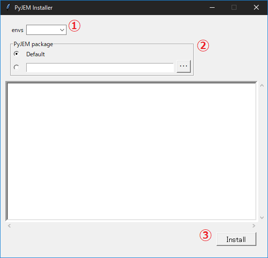
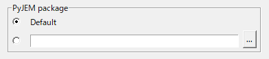

Installation¶
PyJEM supports Anaconda or Miniconda environments.
1.Miniconda¶
For users experienced with Python, the recommended way to install PyJEM with Miniconda. Miniconda provides a very compact development environment using python. You can create a virtual environment on Miniconda. therefore, if you can download a recomend virtual environment file from Forum, you can easiest make a recommendate virtual environment.
2. vjem (virtual env)¶
vjem is a recommendate virtual python environment. PyJEM supports multiple python versions, so please download the environment you wish to use from Forum.
ex) The following are the installation steps for vjem38.
2.1. Open the Forum page. Click the vjem38.yml link.¶
2.2. Download the yml file¶
2.3. Execute the following on the command line¶
conda create -f vjem_yml
※ vjem_yml is yml file’s absolute path that has downloaded.
2.4. Confirm the vjem has been created.¶
> conda activate vjem38
(vjem38) >
If there is no error in activate, the environment has been successfully built.
3.PyJEM install¶
These are the steps for installing PyJEM for the first time. Here are the steps to follow VEM1342-11 and later.
※ If you are using VEM1342-07 - VEM1342-11, please click this link.

3.1.Select the virtual environment¶
Select the python virtual environment name to install the PyJEM library in the combo-box. ※ If the virtual environment name don’t exist in box-list, please input the virtual environment name.
3.2.Check “Default” button¶

3.3.Click the install button¶
When click the “Install” button, start the install method and output the install process message.
4.PyJEM update¶
It is installer to upgrade/downgrade the PyJEM library. please download the PyJEM.zip from the Forum.
※ If you are using VEM1342-07 - VEM1342-11, please click this link.
4.1.Select the virtual environment¶
Select the python virtual environment name to install the PyJEM library in the combo-box. ※ If the virtual environment name don’t exist in box-list, please input the virtual environment name.
4.3.Click the install button¶
When click the “Install” button, start the install method and output the install process message.
Appendix¶
This version of the installer has no UI. Installation is only vjem35, vjem37, and vjem38 installations.
Update¶
Install any version downloaded from the Forum.
4.1.start cmd 4.2.activate virtual environment 4.3.mount media on any drive. Mount the iso configured on the media on any drive.
4.4.change directory change directory to 3. PyJEM folder.
4.5.run updater.exe Update the PyJEM using the updater.exe configured in media.
Example vjem38
(vjem38) Z:/VEM1342-11/PyJEM>media/updater.exe -l media/library/LICENSE_KEY -p C:/Users/JEOL/Downloads/PyJEM.zip
Arguments - -l: License file path - -p: Downloaded PyJEM file